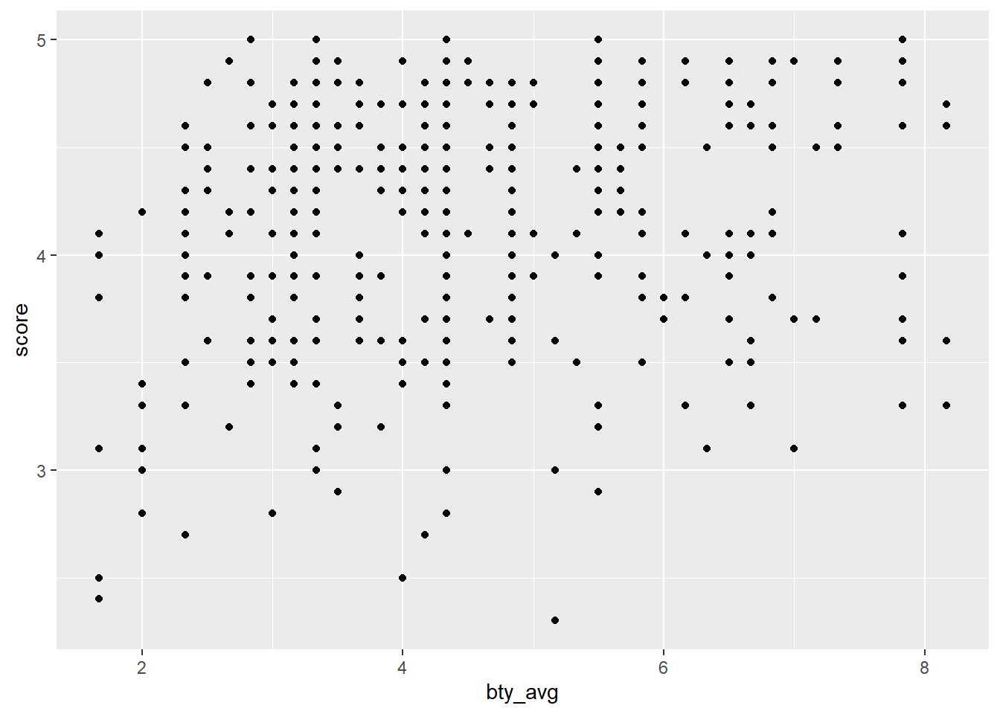
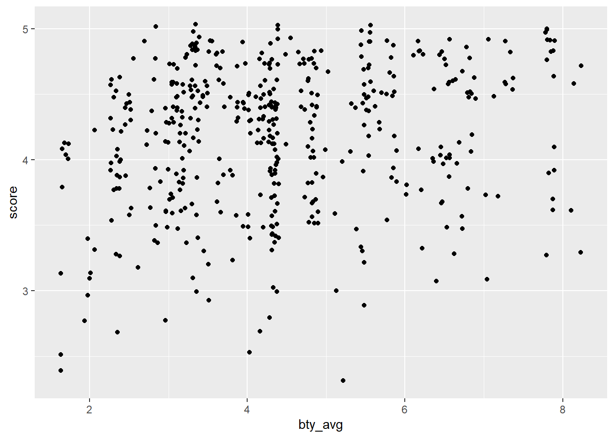
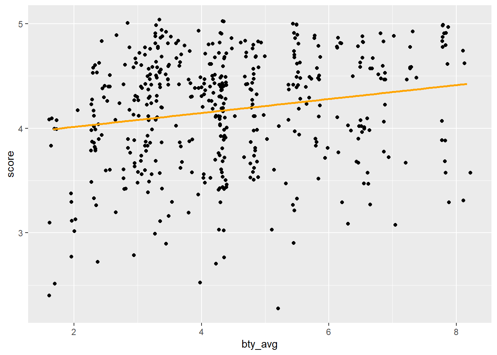

library(tidyverse)
library(tidymodels)
set.seed(1036) # pour la reproductibilitéLab 07 - Grading the Professor!
Le but de ce laboratoire est de pratiquer la modélisation de données.
Pour commencer
Nous allons utiliser GitHub Classroom pour que vous puissiez rendre vos réponses. Sur le portail de cours, vous trouverez un lien vers un assignment.
- Cliquez sur le lien
- Connectez vous avec votre compte Github si ce n’est pas fait
- Acceptez l’assignment
- Liez votre compte avec votre nom d’étudiant
Vous devriez maintenant voir un repository appelé Lab07-[votre-username] où devrait être votre nom d’utilisateur GitHub.
Sur la page du repository:
- Cliquez sur le bouton vert:

- Copiez le lien terminant en
.git- Quelque chose ressemblant à
https://github.com/PRO1036/lab07-[votre-username].git
- Quelque chose ressemblant à
Dans RStudio:
- Fichier > Nouveau Projet
- Version Control > Git
- Dans Repository URL : indiquez l’adresse copiée à l’étape précédente
- Choisissez un nom pour le dossier qui sera créé, par exemple “Lab02”
- Choisissez où vous voulez créer le projet dans votre ordinateur.
Cela va copier les fichiers présents sur GitHub, et les copier dans le dossier spécifié. Dans le YAML, le output est réglé sur "github_document". Cela permet d’obtenir un format adapté à GitHub. Notamment, votre fichier final sera un fichier Markdown (.md).
Packages
Nous utiliserons le package tidyverse pour la manipulation des données et le package tidymodels pour la modélisation. Vous pouvez le charger en exécutant ce qui suit dans votre Console :
Données
De nombreuses universités utilisent les évaluations des étudiants pour évaluer la performance des professeurs. Cependant, l’utilisation de ces évaluations comme indicateur de la qualité des cours et de l’efficacité de l’enseignement est souvent critiquée car ces mesures peuvent refléter l’influence de caractéristiques non liées à l’enseignement, telles que l’apparence physique de l’instructeur. L’article intitulé “Beauty in the classroom: instructors’ pulchritude and putative pedagogical productivity” (Hamermesh et Parker, 2005) (Hamermesh and Parker, 2005) a révélé que les instructeurs considérés comme plus beaux reçoivent des évaluations pédagogiques plus élevées.
Dans ce lab, vous analyserez les données de cette étude afin de savoir ce qui contribue à une évaluation positive des professeurs.
Les données ont été recueillies à partir des évaluations des étudiants à la fin du semestre pour un large échantillon de professeurs de l’Université du Texas à Austin. De plus, six étudiants ont évalué l’apparence physique des professeurs. (Il s’agit d’une version légèrement modifiée de l’ensemble de données original qui a été publié dans le cadre des données de réplication pour “Data Analysis Using Regression and Multilevel/Hierarchical Models” (Gelman et Hill, 2007).) Le résultat est un datafrane où chaque ligne contient un cours différent et les colonnes représentent des variables sur les cours et les professeurs.
Les données que nous utiliserons pour les différents exercices sont fournies dans le dossier data/.
Exercices
Importation des données
Commencez par importer les données dans une variable evals.
Vous pouvez examiner les données avec la fonction glimpse() ou head(). Vous devrierz obtenir un dataframe avec 463 observations et 21 variables.
Analyse Exploratoire
Exercice 1
1.1 Visualisez la distribution des scores. La distribution est-elle asymétrique ? Qu’est-ce que cela vous dit sur la façon dont les étudiants évaluent les cours ? Est-ce ce à quoi vous vous attendiez ? Pourquoi ou pourquoi pas ? Incluez toutes les statistiques sommaires et visualisations que vous utilisez dans votre réponse.
1.2 Visualisez et décrivez la relation entre le score et bty_avg.

1.3 Recréez le nuage de points de l’exercice 2, mais cette fois en utilisant geom_jitter() ? Que signifie “jitter” ? Qu’est-ce qui était trompeur dans le nuage de points initial ?

🧶 ✅ ⬆️ Knit, commit, and push ! N’oubliez pas le message de commit.
Régression linéaire simple
Exercice 2 - Variable numérique
Dans cette partie, le modèle linéaire sera de la forme \(\hat{y} = b_0 + b_1 x\).
2.1 Voyons si la tendance apparente dans le graphique est autre chose que la variation naturelle. Ajustez un modèle linéaire appelé score_bty_fit pour prédire le score moyen d’évaluation des professeurs par la note moyenne de beauté (bty_avg). Sur la base des résultats de la régression, écrivez le modèle linéaire.
2.2 Reproduisez le nuage de points de l’exercice 2 et ajoutez la ligne de régression à ce graphique en orange, sans incertitude.
`geom_smooth()` using formula = 'y ~ x'
2.3 Interprétez la pente du modèle linéaire dans le contexte des données. Commenter si la pente a du sens dans ce contexte.
2.4 Déternminez le \(R^2\) du modèle et interprétez-le dans le contexte des données.
🧶 ✅ ⬆️ I Knit, commit, and push ! N’oubliez pas le message de commit.
Exercice 3 - Variable catégorielle
3.1 Fittez un nouveau modèle linéaire appelé score_gender_fit pour prédire le score moyen d’évaluation des professeurs en fonction du gender du professeur. Sur la base des résultats de la régression, écrivez le modèle linéaire et interprétez la pente et l’ordonnée à l’origine dans le contexte des données.
3.2 Quelle est l’équation de la ligne correspondant aux professeurs masculins ? Et pour les professeures féminins ?
3.3 Fittez un nouveau modèle linéaire appelé score_rank_fit pour prédire le score moyen d’évaluation des professeurs en fonction du rank du professeur. Sur la base des résultats de la régression, écrivez le modèle linéaire et interprétez les pentes et l’ordonnée à l’origine dans le contexte des données.
3.4 Créez une nouvelle variable appelée rank_relevel où "tenure track" est le niveau de référence.
3.5 Fittez un nouveau modèle linéaire appelé score_rank_relevel_firt pour prédire le score moyen d’évaluation des professeurs en fonction de rank_relevel du professeur. Il s’agit de la nouvelle variable créée dans l’exercice 3.4. Sur la base des résultats de la régression, écrivez le modèle linéaire et interprétez les pentes et l’ordonnée à l’origine dans le contexte des données. Déterminez également le \(R^2\) du modèle et interprétez-le.
3.6 Créez une autre nouvelle variable appelée tenure_eligible qui étiquette le personnel enseignant "teaching" comme "no" et étiquette le personnel enseignant "tenure track" et "tenured" comme "yes".
3.7 Fittez un nouveau modèle linéaire appelé score_tenure_eligible_fit pour prédire le score moyen d’évaluation des professeurs en fonction de l’éligibilité à la titularisation (tenure_eligible) du professeur. Il s’agit de la nouvelle variable créée dans l’exercice 3.6. Sur la base des résultats de la régression, écrivez le modèle linéaire et interprétez les pentes et l’ordonnée à l’origine dans le contexte des données. Déterminez également le \(R^2\) du modèle et interprétez-le.
🧶 ✅ ⬆️ I Knit, commit, and push ! N’oubliez pas le message de commit.
Régression linéaire multiple
Exercice 4
4.1 Fittez un modèle linéaire score_bty_gen_fit, prédisant le score moyen d’évaluation des professeurs en fonction de la note moyenne de beauté (bty_avg) et du genre (gender). Écrivez le modèle linéaire et notez le \(R^2\) et le \(R^2\) ajusté.
4.2 Interprétez les pentes et l’ordonnée à l’origine de score_bty_gen_fit dans le contexte des données.
4.3 Quel pourcentage de la variabilité de score est expliqué par le modèle score_bty_gen_fit.
4.4 Quelle est l’équation de la ligne correspondant seulement aux professeurs masculins ? Et pour les professeures féminins ?
4.5 Pour deux professeurs qui ont reçu la même note de beauté, quel genre a tendance à avoir le score d’évaluation de cours le plus élevé ?
4.6 Comment la relation entre la beauté et le score d’évaluation varie-t-elle entre les professeurs masculins et féminins ?
4.7 Comparez les valeurs de \(R^2\) ajusté de score_bty_gen_fit et score_bty_fit. Que nous dit cela sur l’utilité de gender pour expliquer la variabilité des scores d’évaluation lorsque nous avons déjà des informations sur la note de beauté du professeur.
4.8 Comparez les pentes de bty_avg sous les deux modèles (score_bty_fit et score_bty_gen_fit). L’ajout de gender au modèle a-t-il modifié l’estimation du paramètre (pente) pour bty_avg ?
4.9 Créez un nouveau modèle appelé score_bty_rank_fit sans gender mais en ajoutant rank. Écrivez l’équation du modèle linéaire et interprétez les pentes et l’ordonnée à l’origine dans le contexte des données.
🧶 ✅ ⬆️ I Knit, commit, and push ! N’oubliez pas le message de commit.
Références
Hamermesh, D. S. and Parker, A. (2005). Beauty in the classroom: Instructors’ pulchritude and putative pedagogical productivity. Economics of Education Review, 24(4), 369–376. https://doi.org/10.1016/j.econedurev.2004.07.013